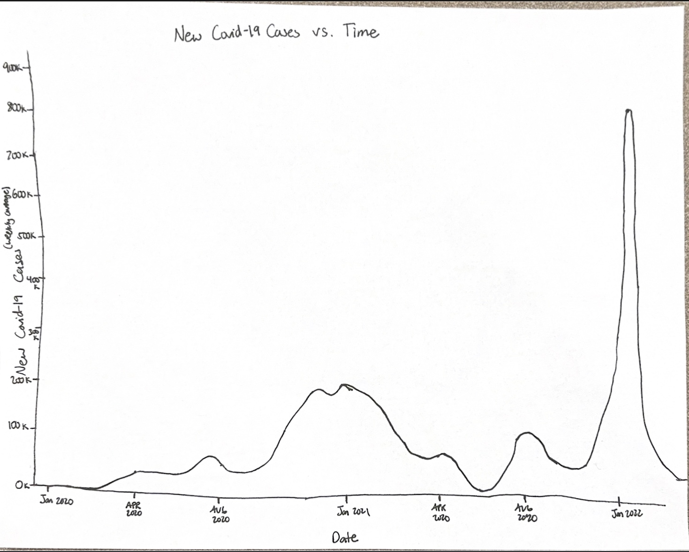
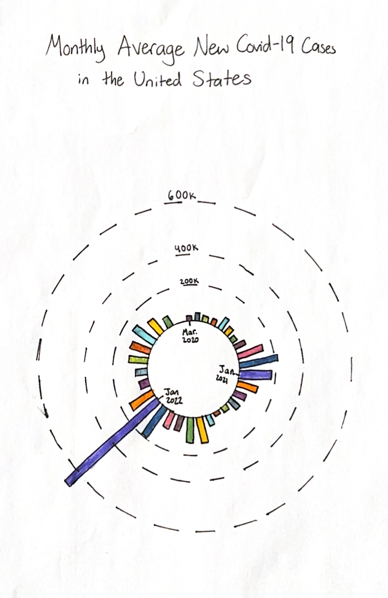
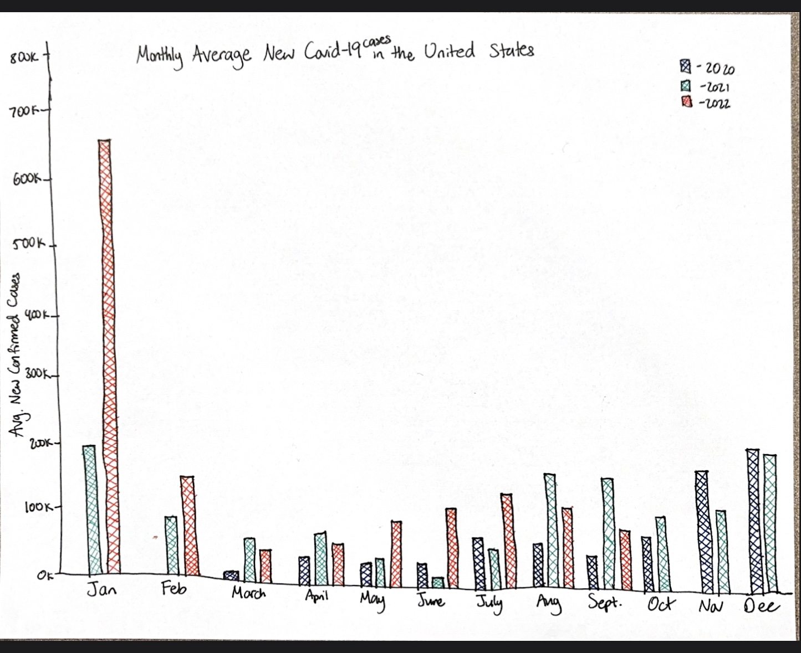
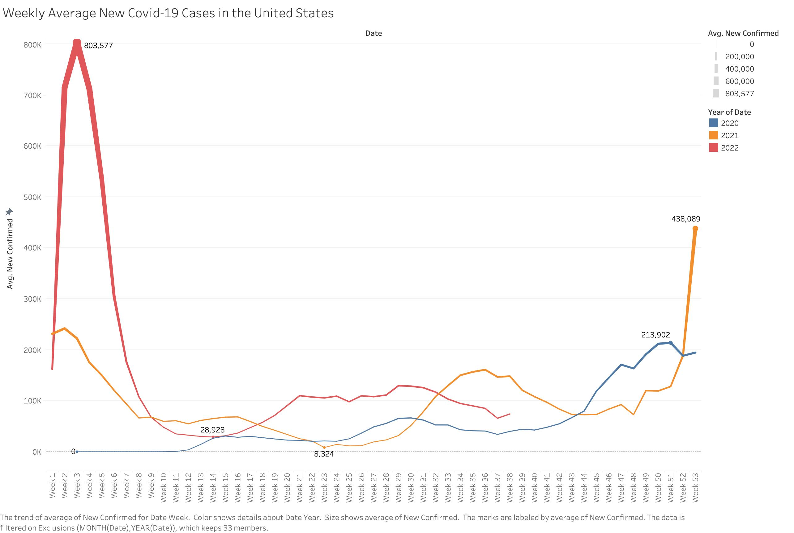

Reading & Critique

Insights about the data/visualization:
- New COVID-19 cases surged dramatically between November 2020 and February 2021.
- In early 2022, cases reached an unprecedented high, with the Omicron wave far surpassing all previous surges in magnitude and rising much more sharply than earlier waves.
- Across all three years, cases consistently increased during late fall and winter and declined during spring and summer, suggesting a seasonal pattern.
- Even outside of peak periods, baseline case levels in 2021 and 2022 remained higher than in early 2020, suggesting a structural shift in transmission dynamics over time.
Design Critique:
The spiral chart is genuinely creative and eye-catching. It’s the kind of visualization that makes you stop scrolling and lean in because you want to figure out what you’re looking at. For an opinion piece aimed at a broad news audience, that kind of immediate visual impact makes a lot of sense as most readers are probably just skimming and not studying the chart. The circular layout is also conceptually strong. By wrapping time around itself, it lines up the same months across different years, which makes the winter surges feel cyclical and almost inevitable instead of random. Also, the way the Omicron ring bursts outward is incredibly effective at landing the article’s main point that the wave was on a completely different level. For an opinion piece, where emotional resonance can matter more than analytical precision, I believe those are intentional and defensible choices.
At the same time, the design leans a lot into the dramatics that it starts to limit what you can actually learn from it. Since values are shown as radial distance, and visually read almost like expanding area, earlier waves, especially Winter 2020–21, end up looking smaller than they really were. This makes it harder to appreciate how devastating those surges actually were at the time. There’s also no clear numeric scale, so while you get the impression that Omicron was huge, you can’t tell how huge or compare peaks with any real precision. On top of that, it’s not obvious where to start reading, and keeping track of which ring represents which year takes more effort than it should. The chart absolutely delivers an emotional punch, but if the goal is to understand the broader story of the pandemic, not just its most explosive moment, the spiral ends up hiding some of that story behind its visual flair.
Visualization Sketches

Design Rationale for Sketch 1:
- I wanted to start with the simplest possible version of the data before trying anything more creative, just to see the raw shape of the pandemic from start to finish.
- I was hoping it would communicate the overall trajectory of the pandemic and how each wave compared in size, with Omicron clearly standing out as the largest at the end.
- What worked well is that the continuous line does a good job showing how the pandemic evolved over time and Omicron's peak is immediately obvious even without any labels. The graph is also easy to read and understand without explanation.
- What didn't work was that with no color or labels, you can't tell which wave is which without already knowing the timeline. Also, without annotations or a clear scale, it's hard to compare exact peak values across waves.
- What I want to explore next is adding color and annotations to give the peaks more context and meaning. I would also like to make the data more visually appealing and eye-catching.

Design Rationale for Sketch 2:
- After the plain line chart, I wanted to try something more visually interesting that still fixed the spiral's core flaw, so I kept the circular format but switched to bars so that length, not area, encodes the case count.
- I was hoping it would communicate that Omicron was on a completely different scale from every other month, while still preserving the circular/seasonal layout that made the original spiral compelling.
- What worked well was that the reference rings finally give readers an actual scale to work with, which was one of my biggest critiques of the original design. Also, Omicron's bar shooting way past every other one is immediately dramatic and impossible to miss.
- What didn't work so well was that the labels get cramped toward the center where the shorter bars are. Even with color, it is hard to do the comparisons because the bars are not necessarily near each other.
- What I want to explore next is trying something grouped side by side so that comparisons are easier to do.

Design Rationale for Sketch 3:
- I wanted to try something more conventional and see if a straightforward grouped bar chart could communicate the seasonal pattern and Omicron's scale just as clearly without any unconventional form.
- I was hoping that it would communicate how each month compared across all three years, so the seasonal patterns would be more obvious.
- What worked well was that the grouped structure makes cross-year comparison really intuitive. You can immediately see that January 2022 is way larger January 2021 and 2020. Also, having months on the y-axis gives a clear reading direction with an obvious entry point and the shared x-axis means all comparisons are precise.
- What didn't work so well was that with three bars per month across 12 months, the chart gets quite dense and a bit overwhelming to scan. Also, the horizontal orientation makes Omicron's bar less visually dramatic than it could be. It's long, but it doesn't have the same punch as something shooting upward or outward
- I think in the final design I would want to take the cross-year seasonal comparison idea but making it cleaner. Overlaying years as lines rather than grouping bars would be less overwhelming yet easy to do comparisons.
Final Visualization Design

Final Writeup
For this visualization, I intentionally reframed the pandemic around seasonality rather than continuous chronological time. Instead of plotting 2020–2022 as a single timeline, I aligned each year on the same Week 1–53 x-axis. That single transformation collapses three years into a shared seasonal frame, making a recurring winter surge pattern immediately visible. The design makes a clear analytical claim that COVID waves weren't random spikes, they were cyclical, and they consistently got worse in colder months. Color differentiates years without overwhelming the chart, while position on a common vertical scale preserves accurate magnitude comparison. I also incorporated line thickness as a redundant encoding of intensity so that the most severe periods visually dominate even before the reader processes the numbers, a deliberate choice to reinforce just how different Omicron's scale was. Annotating yearly peaks and troughs provides precise reference points so viewers can compare waves without estimating from gridlines. Keeping it as a single panel was also intentional. Splitting the data into side-by-side panels would have improved isolation but would have broken the seasonal overlay that drives the whole insight.
This design directly responds to the limitations I identified in the spiral chart: its lack of readable scale, the perceptual distortion from radial encoding, and the ambiguous reading direction. Linear position on a fixed y-axis restores quantitative clarity. Viewers can see that Omicron's peak was way larger than the Winter 2021 surge and the initial 2020 wave without having to estimate or mentally decode the chart. The left-to-right weekly axis also gives a clear place to begin. At the same time, I tried to preserve the spiral’s strongest idea. By overlaying years within a shared seasonal frame, the winter pattern becomes even more obvious, while still making it clear how dramatically Omicron exceeded everything before it. The main tradeoff is that aligning by calendar week makes the internal shape of each wave, how fast it rises and falls, a little harder to compare than a wave-aligned chart would. But for a general audience, the seasonal framing felt more intuitive and more meaningful. In the end, the redesign highlights that every visualization requires prioritization. Maximizing precision, clarity, and narrative emphasis all at once isn’t possible. Deciding which story the data should foreground is central to the design process, and in this case, making the recurring winter pattern and the scale of Omicron unmistakable was the most meaningful choice.